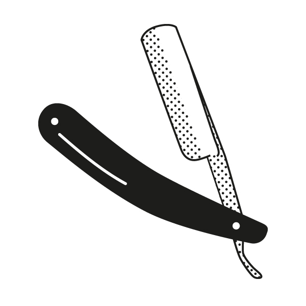

Show the code

Data Mining - CdL CLAMSES
 “Pluralitas non est ponenda sine necessitate.” William of Ockham
In this unit we will cover the following topics:
You may have seem some of these notions before…
…but it is worth discussing the details of these ideas once again, with the maturity you now have in a M.Sc.
They are the foundations of statistical learning.
Let us presume that yesterday we observed n = 30 pairs of data (x_i, y_i).
Data were generated according to y_i = f(x_i; \beta) + \epsilon_i, \quad i=1,\dots,n.
The \epsilon_1,\dots,\epsilon_n are iid “error” terms, such that \mathbb{E}(\epsilon_i)=0 and \text{var}(\epsilon_i)=\sigma^2 = 10^{-2}.
Here f(x; \beta) is a regression function (signal) that we leave unspecified.
Suppose today we get a new value x_{n+1}. We wish to predict y_{n+1} using f(x_{n+1}; \beta).
The function f(x;\beta) is unknown, so we need to estimate it.
A simple approach is using the tools of Unit A.1, such as polynomial regression: f(x; \beta) = \beta_1 + \beta_2 x + \beta_3 x^2 + \cdots + \beta_p x^{p-1}, i.e. f(x; \beta) is approximated with a polynomial of degree p-1.
This model is linear in the parameters, therefore we can use ordinary least squares.
However, how do we choose the degree of the polynomial p - 1?
Without have any clear guideline, in principle any value p \in \{1,\dots,n\} could be appropriate.